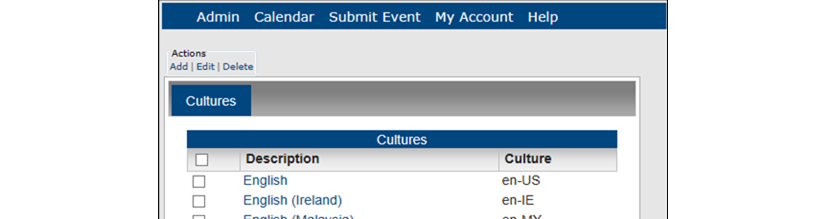
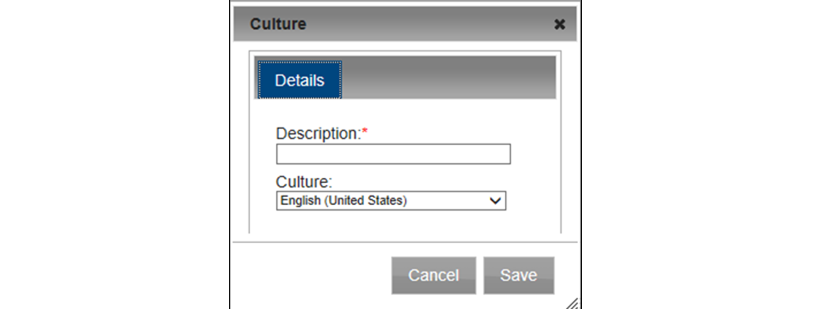

Managing Cultures
Cultures are uses if you use language translation: a culture is the language (which you provide) into which the menu text, menu items, field labels, and help text will be translated on your Master Calendar site. This topic guides you in working with these settings.
1. On the Admin menu, point to Configuration > Cultures. The Cultures page opens, listing all the cultures that are currently configured in your Master Calendar database.

2. To add a culture, under Actions, click Add. The Culture dialog box opens, where you can name or describe the culture that you are configuring and select the appropriate culture. The default value is English (United States).

- In the Description field, enter a name or a phrase that best describes the culture that is being configured, for example, Spanish (Mexican) for the Spanish (Mexico) culture.
- On the Cultures dropdown list, select the culture.
- Click Save. A message opens indicating that the culture was saved.
- Click OK in the message. The message closes and the newly configured culture is displayed on the Cultures page.
3. To edit a culture's description, select the culture you wish to edit.
- Under Actions, click Edit. The Culture dialog box opens. The dialog box lists the selected culture and its description. Only the description is editable.
 | Tip:If you selected the wrong culture for a culture description, then you must delete the culture, and add it again. |
- Edit the description for the culture.
- Click Save. A message opens indicating that the culture was saved.
- Click OK in the message. The message closes and the newly edited culture is displayed on the Cultures page.
3. To delete a culture, select the culture you wish to delete.To select all cultures, select Description. If you have multiple pages of cultures to delete, you must repeat this entire process on each page.
- Under Actions, click Delete. A message opens asking you if you are sure that you want to delete all the selected cultures.
- Click OK in the message. A message opens indicating that all the selected cultures were successfully deleted.
- Click OK in the message. The Cultures page is updated to reflect the deletion of the cultures.
Page tags: article:topic